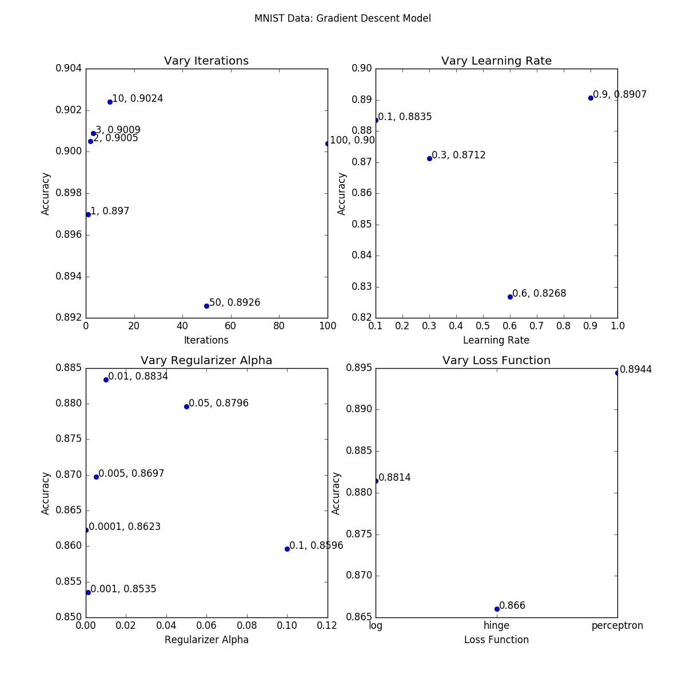
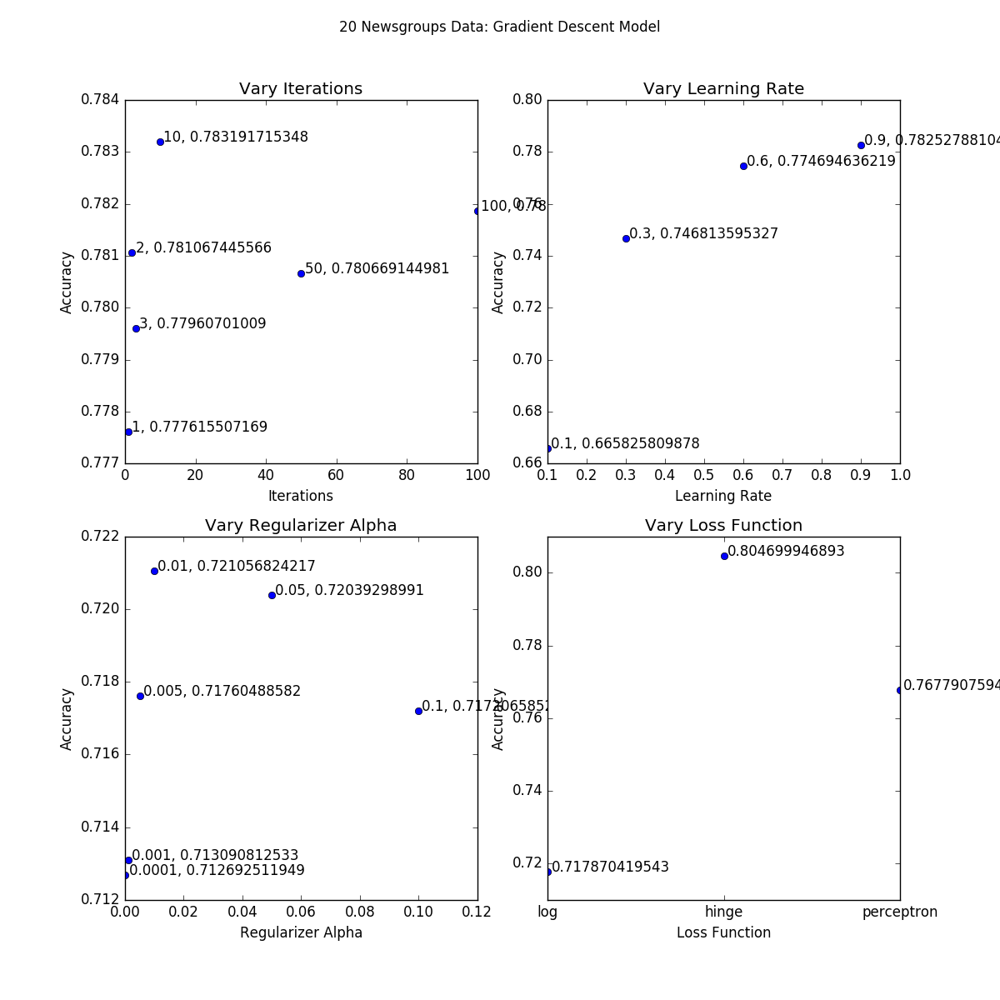
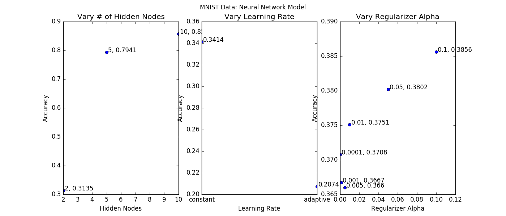
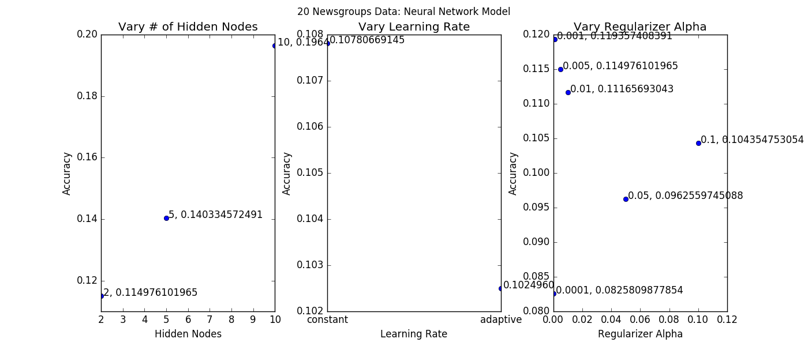

n_iter parameter, and found that 10 iterations gave the highest accuracy.eta0 parameter, setting the learning_rate parameter to 'constant'. We found that the highest learning rate, 0.9, gave the highest accuracy. However, we kept the number of iterations constant at 5, so if we had had more iterations we may have seen that a lower learning rate may have given higher accuracy.alpha parameter while keeping the penalty parameter constant at 'l2'. We found that and alpha of 0.01 gave the highest accuracy. However, the alpha parameter is also used to compute the learning rate when the learning_rate is 'optimal', so it's hard to accurately judge the effect of alpha.'perceptron' loss function was most effective, although all loss functions resulted in accuracies within 3% of each other. The differences were more pronounced in the 20 Newsgroups dataset; the 'hinge' loss function was the most effective by around 8%. 
In general, our accuracies for neural network models were very low, between 10% and 40%. However, one model (the MNIST dataset with 10 hidden layer nodes) got a 90% accuracy. We are not sure why.
hidden_layer_sizes attribute, and found that more hidden layer nodes correlated with higher accuracy.learning_rate parameter, and found that 'constant' performed better than 'adaptive'. However, all models had quite low accuracies.alpha parameter, and found that the results were all over the place. The accuracies only varied by about 2%, and there was no discernable pattern as to which alpha gave the highest accuracy. 